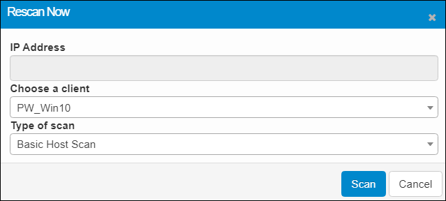
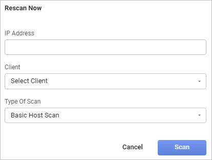

Discovered Items: Rescan Now
Use this function to rescan a selected asset.
| 1. | While viewing the Details tab, click the Rescan Now button. The Rescan Now dialog box displays. |


| 2. | In the IP Address field, enter the IP Address for the client. The IP range can be a single IP, multiple IPs (separated by a space), CIDR Notation or IP with Range. |
| 3. | In the Choose a client field, click the drop-down list and select an available client. |
| 4. | In the Type of scan field, click the drop-down list and select the type of scan. For details on the types of scans available, refer to Run a Scan. |
| 5. | When all selections/entries are made, click Scan. A confirmation message displays and the window refreshes and shows the Recent Scans information. |
Related Topics